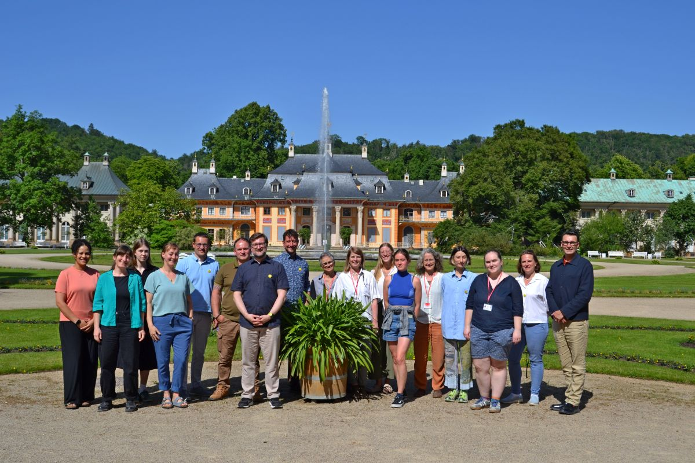

Projektstart
05. Januar 2026
Offizieller Projektbeginn 01.01.2026: Die RekonKI-Partner starten in das Projekt
Nach intensiver Vorbereitungsphase ist das Projekt offiziell gestartet. Das Team lernt sich am 03.02.2026 innerhalb eines Workshops kennen und erarbeitet die Projektplanung gemeinsam.
Weiterlesen →

Forschung
15. April 2026
Anwendungsszenarien und Anforderungsdefinitionen werden identifiziert
Im intensiven Austausch der Projektteilnehmer werden die Prozesse aufgenommen. Der nächste Schritt ist die Erarbeitung der Anforderungen von den Projektpartnern.
Weiterlesen →

Veranstaltung
26. Mai 2026
Projekttreffen am 26.05.2026 am Designcampus Pilnitz
Am 26.05.2026 trafen sich die Projektpartner im Beisein des Projektträgers im Wasserpalais des Schlosses Pillnitz. Es war das erste persönliche Kennenlernen aller Projektbeteiligten in perfekter Atmosphäre.
Weiterlesen →